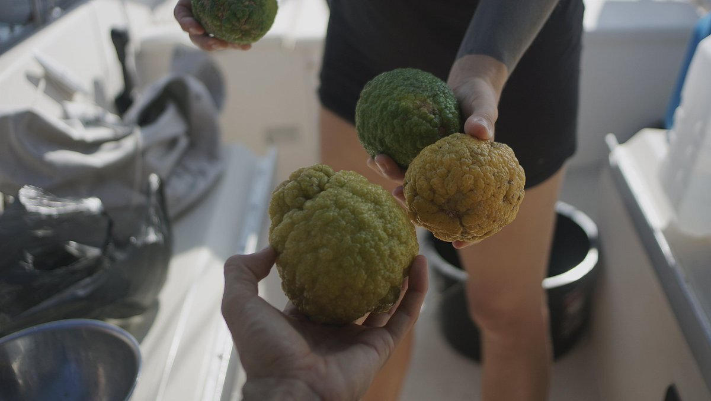

nutrition
Following a plant-based diet while traveling is very possible. We cannot recommend lactofermentation, and sprouting enough.
General rules:
- Eat at least 4 servings of vegetables per day.
- Eat at least 3 servings of legumes per day.
- Eat at least 4 servings of grains per day.
- Eat at least 3 servings of fruits per day.
- Eat at least 1 serving of seeds per day.
Planning provisions ahead is important, because a lot of the places may not have specialty items. Food items like nutritional yeast, miso, dried legumes, quality wholegrain flour(or wheat berries), flax seeds and B12 supplements, are especially hard to find.
Buying a large supply of shelf-stable tofu is always a good idea; it's a product that is high in protein and that can be used to make sauces and sautees while providing calcium (makes sure it has calcium sulfate or calcium chloride in the ingredients list). We recommend carrying whole soybeans to make your own tofu, although it is an activity that is best reserved while near cities because it requires a lot of water to prepare — although it tastes so much better(although it requires buying a coagulant like nigari).
Brown lentils are one of the cheapest sources of protein available, and they sprout very well (within 2-3 days).
For iodine, carry iodized salt, or seaweed (wakame or nori).
Other essentials, like omega 6 (LA), can be found in pumpkin seeds, sunflower seeds for instance, omega 3 (ALA) can be found in linseed(flax seeds), soy beans, chia seeds etc. Carry whole flax seeds, and grind them in small quantities. The ground variety turns rancid quickly, it is necessary to keep them in the cold.
Staples like nut milks and oats are found everywhere, varying in price and quality. It is sometimes difficult to find nut milk without added sugar or flavorings.
There will always be fresh vegetables available, but the selection can be poor at times. Carrying a dried version of those foods can help, for example: dried mushrooms, radish, seaweed, tomatoes etc. Drying your own fresh is even better, it is a good way to keep fruits while on long passages, but only possible in places with a lot of sun and not too much humidity.
Eating frozen produce can help in a bind. A lot of frozen vegetables don't lose their nutrients, like broccoli for instance. Most places will carry frozen goods, and it's generally cheaper than buying the same item fresh. If like us you lack a fridge, get a bag with insulation or a cooler and keep it in there with other frozen goods. It won't keep forever, but it helps to slow the thawing process.
Read more about plant based nutrition.